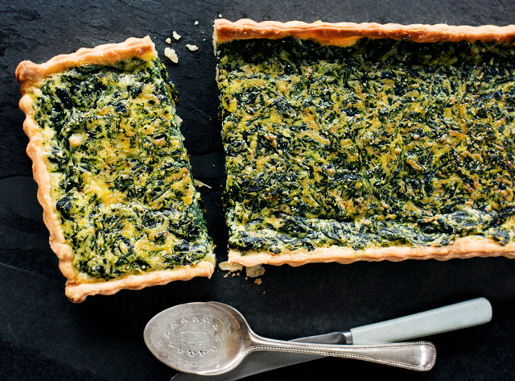

Beat eggs and vanilla extract, almond extract, cinnamon, nutmeg and allspice together in a separate bowl until the eggs are well beaten; add to the milk mixture and stir to dissolve the brown sugar.
Heat a nonstick skillet or griddle over medium-low heat.
Set 1 slice of toast into the milk mixture; let soak until moistened, about 10 seconds per side.
Cook the dipped toast in the preheated skillet until bottom is golden brown, 3-5 minutes; flip toast and coninue to cook until the other side is browned, 3-5 minutes more. Repeat dipping and cooking with remaining bread slices.

spinach quiche
INGREDIENTS
1/2 cup butter
3 cloves garlic, chopped
1 small onion, chopped
1 (10 oz) package frozen, thawed and drained
1 (4.5 oz) can mushrooms, drained
1 (8 oz) package shredded cheddar cheese
salt and pepper
1 (9 in) unbaked deep dish pie crust
4 eggs, beaten
1 cup milk
DIRECTIONS
Preheat oven to 375 degrees F (190 degrees C).
In a medium skillet, melt butter over medium heat. Saute garlic and onion in butter until lightly browned, about 7 minutes. Stir in spinach, mushrooms, feta and 1/2 cup cheddar cheese. Season with salt and pepper. Spoon mixuture into pie crust.
In a medium bowl, whist together eggs and milk. Season with salt and pepper. Pour into the pastry shell, allowing egg moisture to thoroughly combine with spinach mixture.
Bake in preheated oven for 15 minutes. Sprinkle top with remaining cheddar cheese, and bake an additional 35-40 minutes, until set in center.